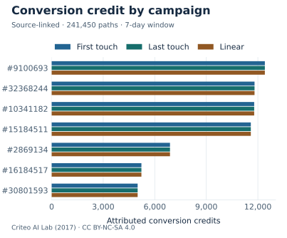
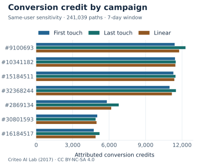

01. The reporting question
When several display impressions precede a conversion, an attribution report needs a rule for deciding how much credit each campaign receives. This study asks how much a campaign ranking depends on the choice of rule and on which impressions count as part of the path.
The comparison uses first touch, last touch, and linear credit. The first two methods assign credit to the earliest or latest observed impression. Linear credit divides one conversion equally across its qualifying impressions. Exact time ties split the first- or last-touch credit evenly.
02. Dataset and eligibility
Criteo AI Lab released an anonymized, subsampled extract of live display ad impressions. The pinned release contains 16,468,027 impressions across 675 campaign IDs. All campaigns in this study are observed in Criteo display data.
- Impressions scanned
- 16,468,027
- Reported conversion IDs
- 435,810
- Lookback per conversion
- 7 days
Of the reported IDs, 2,910 mapped to multiple users or conversion times. The analysis excludes them and requires both the conversion and its seven-day lookback to fit inside the observed impression period. This excludes 64,508 early IDs and 86,220 late IDs. Of the remaining 282,172 IDs, 40,722 lack a qualifying source-linked impression.
Criteo AI Lab (2017), Attribution Modeling for Bidding Dataset. The Criteo-derived metrics and figures on this page are shared under CC BY-NC-SA 4.0. Source and terms · Companion paper · CC BY-NC-SA 4.0
03. Build and compare paths
- Verify source
- Check conversion IDs
- Build pre-conversion paths
- Apply credit rules
- Compare rankings
Source-linked paths
The primary analysis uses impressions tagged with the same conversion ID. An impression must occur strictly before the conversion and within seven days of it. Each eligible conversion contributes one unit of credit per model.
Same-user sensitivity
For the same starting cohort of conversions, consider any observed impression for the same anonymized user during the seven days before conversion. An impression must also occur after the user’s previous coherent conversion where one exists. This removes 411 anchors with no remaining impression. The 94 anchors sharing a conversion time with another ID for the same user can share eligible impressions.
The rule compares plausible ways to construct observed paths. A nearby ad for the same user can come from a different advertiser or have no relationship to the purchase.
04. Where credit shifts
All three rules give each campaign the same credit in the 241,450 source-linked paths. In the same-user sensitivity, 41,337 of 241,039 paths (17.15%) contain multiple campaigns, and the top campaign changes between first and last touch.
| Path scope | Conversions | Impressions | Multi-campaign paths |
|---|---|---|---|
| Source-linked | 241,450 | 381,898 | 0 |
| Same-user sensitivity | 241,039 | 623,011 | 41,337 |


| Campaign | First touch | Last touch | Linear |
|---|---|---|---|
| #9100693 | 11,392.0 | 12,284.0 | 11,761.0 |
| #10341182 | 11,420.5 | 11,480.5 | 11,451.2 |
| #15184511 | 11,286.0 | 11,460.5 | 11,364.3 |
| #32368244 | 10,973.0 | 11,497.0 | 11,163.7 |
| #2869134 | 5,815.0 | 6,790.0 | 6,173.9 |
Campaign #2869134 gains 975 credits from first touch to last touch, the largest absolute difference between those two rules in the sensitivity analysis.
05. How to use the comparison
Keep the path definition, lookback, and credit rule visible in campaign reporting. If the ranking changes with those choices, review the campaigns’ observed touch timing and check whether identity and event collection cover the channels or campaigns the decision depends on.
This dataset describes a subsampled display ad system with anonymized campaign IDs and transformed costs. The comparison measures how rules assign credit within the available data. Estimating incremental conversion lift or the effect of a budget change requires an experiment or another credible source of counterfactual evidence.
06. Reproduce the study
The Python entry point downloads and verifies the pinned source release, runs the DuckDB SQL, and exports aggregate tables and figures. The gzip download is about 623 MiB. The included fixture tests require no live download.
cd projects/marketing-attribution
python -m pip install -r requirements.txt
python -m src.run
python -m unittest discover -s tests